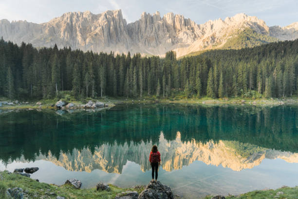
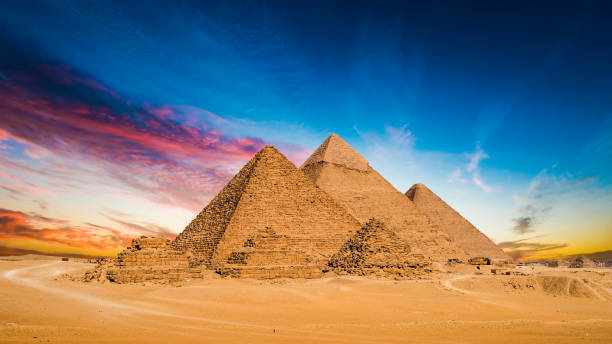

MY FAVOURITE TOURIST SPOT IS BALI
Bali is a province of Indonesia and the westernmost of the Lesser Sunda Islands. East of Java and west of Lombok, the province includes the island of Bali and a few smaller offshore islandsBalinese culture is a mix of Balinese Hindu-Buddhist religion and Balinese customs. It is perhaps most known for its dance, drama and sculpture. The island is also known for its Wayang kulit or Shadow play theatre.

BEAUTIFUL
Glorious mountainous areas with lush greenery, scenic lakes, gorgeous waterfalls, iconic rice fields, flower gardens, gushing sacred rivers and secret canyons all make up the island's landscape.

WONDERFULL
On shore, the lush jungle shelters stone temples and mischievous monkeys. The “artistic capital” of Ubud is the perfect place to see a cultural dance performance, take a batik or silver-smithing workshop, or invigorate your mind and body in a yoga class.
ADVENTURE
bali have a lot of adventureous places like Waterbom Bali, Water Parks,
Sacred Monkey Forest Sanctuary,
Tegalalang Rice Terrace,
Tanah Lot Temple,
Bali Zoo,
Uluwatu Temple,
Campuhan Ridge Walk,
Mount Batur.
ANOTHER FAVOURITE SPOT IS TURKEY
Turkey, officially the Republic of Türkiye, is a transcontinental country located mainly on the Anatolian Peninsula in Western Asia, with a small portion on the Balkan Peninsula in Southeast Europe.

Turkey is a beautiful country surrounded by sea on 3 sides. The Mediterranean in the south, the Aegean Sea, and the Black Sea to the north and northwest take place in Turkey's overland waters,including the Strait of Dardanelles and Bosporus involve the Marmara Sea.
astonishing

Turkey has a collectivist culture whereby strong loyalty is shown to familial and social groups, as well as the broader nation. People's relationships with their neighbours and community are generally closer than what many from the English-speaking West experience.
CULTURE
THIRD FAVOURITE TOURIST SPOT IS SWITZERLAND
Switzerland is a mountainous Central European country, home to numerous lakes, villages and the high peaks of the Alps. Its cities contain medieval quarters, with landmarks like capital Bern’s Zytglogge clock tower and Lucerne’s wooden chapel bridge
BEAUTIFUL
Nestled in the heart of Central Europe, Switzerland is home to some of the most striking sightseeing places and epic landscapes. The dramatic alpine scenery, heaps of lakes, delicious food, and quaint villages make Switzerland the best and the most beautiful country in the world.
SOOTHING
One of the most iconic features of Switzerland is its majestic mountains. With the Swiss Alps covering more than 60% of the country, it's no surprise that its statuesque mountains draw you in. What is this? The snow-capped peaks and rugged terrain make for some of the world's most spectacular views and climbs

GORGEOUS
The combination of amazing weather, eye-captivating scenery of the Alps, and small but nice things like the best cheeses, chocolates, and watches together are what makes Switzerland and its people so intriguing
FOURTH FAVOURITE SPOT IS KASHMIR
Popularly known as the "Paradise on Earth," Jammu and Kashmir is a tourist favorite for its scenic splendor, snow-capped mountains, plentiful wildlife, exquisite monuments, hospitable people, and local people handicrafts.
Picturesque and enchanting, Kashmir is cradled high in the lofty green Himalayas and hailed all over the world for its incredible natural beauty. Surrounded by mountain peaks, lush green valleys, glistening lakes, temples and spectacular Mughal-era gardens, it has inspired poets through centuries.
BEAUTIFUL
The culture of Kashmir was influenced by the Persian as well as Central Asian cultures after the Islamic invasion of Kashmir. Kashmiri culture is heavily influenced by Islam.it has also been embracing point of advent of Islam bringing its fold finest traditions of Persian civilization, tolerance, brotherhood and sacrifice.
CULTURE
FIFTH FAVOURITE TOURIST SPOT IS PARIS
Paris, France's capital, is a major European city and a global center for art, fashion, gastronomy and culture. Its 19th-century cityscape is crisscrossed by wide boulevards and the River Seine. Beyond such landmarks as the Eiffel Tower and the 12th-century, G

BEAUTIFUL
A list of beautiful cities isn't complete without Paris! Paris is unarguably one of the most beautiful cities in the world, the capital of France, of art and of fashion.

SPECTACULAR
There are endless reasons to visit Paris repeatedly: it is a beautiful and cultural city, very walkable, with great sights, and it has been a source of inspiration for many writers, artists, and filmmakers.
CULTURE
French culture is most commonly associated with Paris, which is a center of fashion, cuisine, art and architecture, but life outside of the City of Lights is very different and varies by region. France doesn't just have culture; the word "culture" is actually French.
SIXTH FAVOURITE SPOT IS EGYPT
Egypt, a country linking northeast Africa with the Middle East, dates to the time of the pharaohs. Millennia-old monuments sit along the fertile Nile River Valley, including Giza's colossal Pyramids and Great Sphinx as well as Luxor's hieroglyph-lined Karnak Temple and Valley of the Kings tombs.

The Great Pyramid of Giza - Egypt Given honorary status
ONE OF THE WONDER

The culture of Egypt has thousands of years of recorded history.
CULTURE